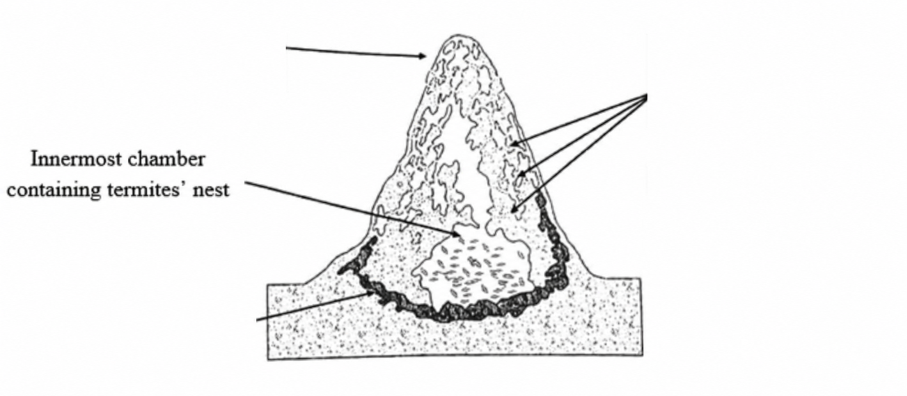

Question 27
Choose the correct heading for paragraph A.
为 A 段选择正确的标题。
白蚁丘
Could the vast towers of mud constructed by insects in sub-Saharan Africa hold the key to our energy-efficient building of the future?
撒哈拉以南非洲昆虫筑起的巨型泥塔，是否蕴藏着未来节能建筑的关键？
ATo most of us, termites are destructive insects which can cause damage on a devastating scale. But according to Dr Rupert Soar of Loughborough University’s School of Mechanical and Manufacturing Engineering, these pests may serve a useful purpose for us after all. His multidisciplinary team of British and American engineers and biologists has set out to investigate the giant mounds built by termites in Namibia, in sub-Saharan Africa, as part of the most extensive study of these structures ever undertaken.
在大多数人看来，白蚁是一种破坏性昆虫，能够造成毁灭性的损害。不过，拉夫堡大学（Loughborough University）机械与制造工程学院（School of Mechanical and Manufacturing Engineering）的 Rupert Soar 博士认为，这些害虫或许终究也能为我们派上用场。他带领一支由英国和美国工程师及生物学家组成的跨学科团队，开始研究撒哈拉以南非洲纳米比亚（Namibia）境内白蚁筑造的巨型蚁丘；这是迄今对此类结构开展的规模最大的一项研究。
BTermite mounds are impressive for their size alone; typically they are three metres high, and some as tall as eight metres have been found. They also reach far into the earth, where the insects ‘mine’ their building materials, carefully selecting each grain of sand they use. The termite’s nest is contained in the central cavity of the mound, safely protected from the harsh environment outside. The mound itself is formed of an intricate lattice of tunnels, which split into smaller and smaller tunnels, much like a person’s blood vessels.
白蚁丘仅凭其体量就令人惊叹：通常高达3米，有些甚至达到8米。它们还深入地下；白蚁在那里“开采”建筑材料，并仔细挑选所用的每一粒沙。白蚁巢位于蚁丘中央的空腔中，安全地免受外界恶劣环境影响。蚁丘本身由错综复杂的隧道网构成，这些隧道不断分叉成越来越细小的通道，很像人体的血管。
CThis complex system of tunnels draws in air from the outside, capturing wind energy to drive it through the mound. It also serves to expel spent respiratory gases from the nest to prevent the termites from suffocating, so ensuring them a continuous provision of fresh, breathable air. So detailed is the design that the nest stays within three degrees of a constant temperature, despite variations on the outside of up to 50 °C, from blistering heat in the daytime to below freezing on the coldest nights. The mound also automatically regulates moisture in the air, by means of both its underground ‘cellar’, and evaporation from the top of the mound. Some colonies even had ‘chimneys’ at a height of 20 m to control moisture loss in the hottest regions of sub-Saharan Africa.
这套复杂的隧道系统会从外界吸入空气，利用风能推动空气穿过蚁丘。它还能把巢内呼吸产生的废气排出，防止白蚁窒息，从而确保新鲜、可供呼吸的空气持续不断。其设计精细到，即使外界温差可达50 °C——从白天的酷热到最寒冷夜晚的零度以下——巢内温度也只在某一恒定温度上下3度的范围内变化。蚁丘还会通过地下“地窖”和丘顶水分蒸发自动调节空气湿度。在撒哈拉以南非洲最炎热的地区，有些蚁群甚至修筑高达20米的“烟囱”，以控制水分流失。
DFurthermore, the termites have evolved in such a way as to outsource some of their biological functions. Part of their digestive process is carried out by a fungus, which they ‘farm’ inside the mound. This fungus, which is found nowhere else on earth, thrives in the constant and optimum environment of the mound. The termites feed the fungus with slightly chewed wood pulp, which the fungus then breaks down into a digestible sugary food to provide the insects with energy, and cellulose which they use for building. And, although the termites must generate waste, none ever leaves the structure, indicating that there is also some kind of internal waste-recycling system.
此外，白蚁在进化过程中将部分生物功能交由外部承担。它们在蚁丘内“培育”一种真菌，由这种真菌完成部分消化过程。这种地球上其他任何地方都不存在的真菌，在蚁丘恒定而适宜的环境中生长旺盛。白蚁用稍加咀嚼的木浆喂养真菌，真菌随后将其分解为可消化的糖类食物，为白蚁提供能量，并产生供其筑巢使用的纤维素。而且，尽管白蚁必然会产生废物，却从来没有废物离开这座结构，这表明内部还存在某种废物循环利用系统。
EScientists are so excited by the mounds that they have labelled them a ‘super organism’ because, in Soar’s words, “They dance on the edge of what we would perceive as what’s living and what’s not.” He explains, “If you get too hot you need to perspire to cool down, or if you’re too cold you need to shiver: that’s called homeostasis. What the termites have done is to move that homeostatic function away from their body, into the structure in which they live.” As more information comes to light about the unique features of termite mounds, we may ultimately need to redefine our understanding of what constitutes a ‘living’ organism.
科学家对这些蚁丘非常着迷，甚至把它们称为“超级有机体”（super organism）。用 Soar 的话说：“它们徘徊在我们所认为的有生命与无生命的边界上。”他解释说：“如果你太热，就需要出汗来降温；如果太冷，就需要发抖，这叫作稳态调节（homeostasis）。白蚁所做的，是把这种稳态调节功能从自己的身体转移到它们居住的结构中。”随着有关白蚁丘独特特征的更多信息逐渐揭示，我们最终或许需要重新界定对何为“生命体”的理解。
FTo reveal the structure of the mounds, Soar’s team begins by filling and covering them with plaster of Paris, a chalky white paste based on the mineral gypsum, which becomes rock-solid when dry. The researcher then carves the plaster of Paris into half-millimetre-thick slices, and photographs them sequentially. Once the pictures are digitally scanned, computer technology is able to recreate complex three-dimensional images of the mounds. These models have enabled the team to map termite architecture at a level of detail never before attained.
为揭示蚁丘的结构，Soar 的团队先用熟石膏填充并覆盖蚁丘。这是一种以石膏矿物为原料、呈粉笔白色的糊状物，干燥后会坚硬如石。研究人员随后把凝固的熟石膏切成半毫米厚的薄片，并依次拍照。照片经数字扫描后，计算机技术便能重建蚁丘复杂的三维图像。这些模型使团队能够以前所未有的精细程度描绘白蚁建筑结构。
GSoar hopes that the models will explain how termite mounds create a self-regulating living environment which manages to respond to changing internal and external conditions without drawing on any outside source of power. If they do, the findings could be invaluable in informing future architectural design, and could inspire buildings that are self-sufficient, environmentally friendly, and cheap to run. “As we approach a world of climate change and temperatures rise,” he explains, “there will not be enough fuel to drive air conditioners around the world.” It is hoped, says Soar, “that the findings will provide clues that aid the ultimate development of new kinds of human habitats, suitable for a variety of arid, hostile environments not only on the earth but maybe one day on the moon and beyond.”
Soar 希望，这些模型能解释白蚁丘如何在不借助任何外部能源的情况下，营造一个可自我调节、并能应对内外条件变化的生存环境。如果能够做到，这些发现对于指导未来的建筑设计可能极具价值，并可能启发人们建造自给自足、环境友好且运行成本低廉的建筑。他解释道：“随着我们进入一个气候不断变化、气温持续上升的世界，燃料将不足以驱动全球各地的空调。”Soar 说，人们希望“这些发现能提供线索，帮助人类最终开发出新型栖息地，使其不仅适用于地球上各种干旱、恶劣的环境，或许有朝一日还适用于月球乃至更遥远的地方。”
交卷前不显示答案。可打开翻译帮助记忆，满分同样计入进度。
The text has seven sections, A–G. Choose the correct heading for each section and move it into the gap.
为各段选择恰当标题。每个选项限用一次。
Choose the correct heading for paragraph A.
为 A 段选择正确的标题。
Choose the correct heading for paragraph B.
为 B 段选择正确的标题。
Choose the correct heading for paragraph C.
为 C 段选择正确的标题。
Choose the correct heading for paragraph D.
为 D 段选择正确的标题。
Choose the correct heading for paragraph E.
为 E 段选择正确的标题。
Choose the correct heading for paragraph F.
为 F 段选择正确的标题。
Choose the correct heading for paragraph G.
为 G 段选择正确的标题。
Label the diagram. Write ONE WORD ONLY from the text for each answer.
根据原文完成题目。每空最多 1 个单词。

图中构成网络、帮助白蚁获得空气的结构是什么？
图中白蚁可持续获得的供应是什么？
地下“cellar”帮助控制什么水平？
蚁丘顶部允许发生什么过程？
Choose YES if the statement agrees with the claims of the writer, choose NO if the statement contradicts the claims of the writer, or choose NOT GIVEN if it is impossible to say what the writer thinks about this.
与作者观点一致选 YES，矛盾选 NO，无法判断作者观点选 NOT GIVEN。
The termite mound appears to process its refuse material internally.
白蚁丘似乎会在内部处理废弃物。
Dr Soar’s reconstruction involves scanning a single photograph of a complete mound into a computer.
Soar 博士的重建方法是把一张完整白蚁丘照片扫描进计算机。
New information about termite architecture could help people deal with future energy crises.
对白蚁建筑的新认识可能帮助人类应对未来能源危机。